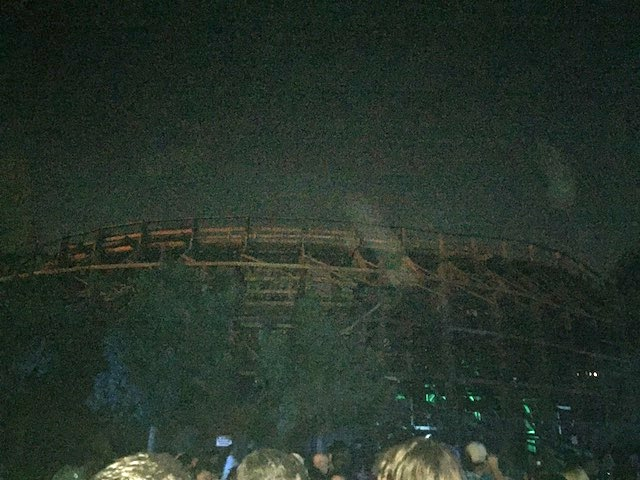
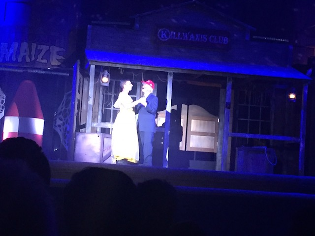
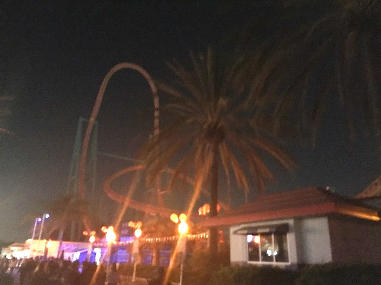

| |
Fall 2017 Photos
Knotts Scary Farm Fright Fest
All right. Time for another Incrediblecoasters Halloween Update. Hey, do any of you remember those old Fall updates we used to do yearly, the ones where we'd go to parks for Halloween time, and then post a big update called Fall "Insert Year Here" Photos. Not sure why I called them that, but it was something I did for a while. But then I stopped doing stuff for Halloween. I think the last one was in 2012. That was the last time we did any parks during Halloween time. I did Queen Mary's Dark Harbor in 2013, but only that as that was expensive, and I was in financial lockdown for Scandinavia. And then, financial lockdown pretty much just killed the Halloween updates as I didn't want to spend the money as I was still fundraising money for trips. And while I still am in financial lockdown, I had always said that I want to do this again. And this was the year where I just shrugged my shoulders and said "F*CK IT!!!". So yeah. We're here at Knotts Berry Farm.
 OK. I arrived too late to do rides during regular hours. Too early to get into Knotts Scary Farm. Starbucks anyone?
OK. I arrived too late to do rides during regular hours. Too early to get into Knotts Scary Farm. Starbucks anyone?
Yep. It's another one of those uber-rare super limited time only frappuccinos from Starbucks. The Zombie Frappuccino. Only avaliable from October 26-Halloween. So yeah. You only had 6 days to get one of these things. These types of drinks first took off in April when they released the Unicorn Frappuccino. That was only avaliable for 5 days, everyone went COMPLETELY APESH*T over them, and they were IMPOSSIBLE to get. No seriously. I tried getting one all 5 days! I went to a Starbucks early in the morning. EVERY SINGLE DAY, IMMEDIETLY SOLD OUT!!! And then it was gone, and they just shrug and say "Oh, I guess you just didn't want a Unicorn Frappuccino Kevin. Oh well, guess you'll never get one". GO F*CK YOURSELF STARBUCKS!!! But, at least, I was able to get the Zombie Frappuccino. Funny enough, I didn't even know this thing existed until I was at Starbucks. I'm not sure if the Zombie Frappuccino had the same problem as the Unicorn Frappuccino and I just got lucky, or if this one was actually avaliable to people.
Honestly, the Zombie Frappachino is really good. It's a Green Carmel Apple with a mocha drizzle, and pink "brains" whipped cream. So this pretty much has my name written all over it. And yeah. It's REALLY good. I'd really hope that Starbucks made this a seasonal drink. But...*sigh* they probably won't. Starbucks wouldn't want to give up their "LIMITED TIME! ONLY AVALIABLE FOR 5 DAYS! BUY BEFORE IT DISSAPERS FOREVER!" bullsh*t fetish. *sigh* F*ck Starbucks.
The crowds are rolling in. The event is about to begin. >=)
Where are we off to again?
Yeah. Amazingly, despite living in So-Cal my entire life, I had never done Knotts Scary Farm. I was just turned away by the seperate admission and my season pass not getting me in. That's what prevented me from doing it. So for a while, I had only done Fright Fest @ SFMM, and Queen Mary's Dark Harbor (I actually did that this year, there's just no update as that's not a theme park). Well, not anymore. I finally did Knotts Scary Farm (Just need to do Universal's Horror Nights now, but...I don't want to spend that money).
Ooh. Look out for all the monsters roaming around Ghost Town.
OK. Let's start out with the most popular maze there. Trick or Treat. And, it's a really good maze. There's a good reason it had the longest line. It was the best maze here. You go in with a flashlight, it's pitch dark, and everything is in the dark, so it really gets to you.
 Ghostrider from the Trick or Treat line.
Ghostrider from the Trick or Treat line.
All right. Let's move onto the next two mazes. Paranormal Inc, and Tooth Fairy.

I'd really love to see a backstage tour here so I can get all these Ghostrider shots on video and during the day.
OK. Paranormal Inc is a maze where...yeah. They showcase all the paranormal and supernatural.
I guess this one doesn't affect me as much as others since I have NO beliefs in anything supernatural or paranormal. But it still was a cool maze with some really cool effects.
OK. This maze is way too easy. It's themed to the dentist. So you have my fear of needles and strong hatred of going to the dentist already built into this maze and going for it. I know this is a reuccuring maze and a classic. I can see why.
Ooh. Supreme Scream at night. =)
Well, we better check out their famous show that is apparently controversial. The Hanging.
OK. This is the scariest thing at Knotts Scary Farm. At least all the other monsters in the scare zones and in the mazes are just fictional characters and actors pretending to be these mythical monsters and having fun. *sigh* Unfortunetly, this monster is actually real and an actual danger to the world. ='(
Eany Meany Miney Mo. Which unlucky bastard is about to go?
Hey! I came to see people hang! Not this sexy dance show! I demand some executions!
 Hey Cliff! Are you enjoying the fidget spinner!? =P
Hey Cliff! Are you enjoying the fidget spinner!? =P

"Oh Putin. I just can't go on with this anymore. You're great and all, but my true love is Ivanka...I mean Goldman Sachs...I mean Melania!"
"Hey look! We found our unlucky bastard! NOW LET'S HANG HER!!!"
So yeah. I really liked The Hanging. Even if it did have dancing peices of sh*t in it. Oh, and the Poop Emoji is here as well. =P
OK. I know we're here for all the mazes and shows and not the rides since we can ride those anytime. But Timber Mtn Log Ride changed the animatronics and theming for Knotts Scary Farm, and I just had to check it out. Because seriously. They did a FANTASTIC job. I loved it even more than I already loved Timber Mtn Log Ride!
"*evil laugh* You mocked my repeated warnings telling you to "SIT DOWN!". Now that you didn't listen, you'll have to deal with me and all the powers of hell!!! *evil laugh*"

OK. This is the 2nd scariest thing at Knotts Scary Farm. Just seeing Xcelerator sitting there closed. I really want it to open back up ASAP. ='(
OK. Another one of their new mazes would be Dark Ride. Given that I'm a coaster enthusiast, this should really appeal to me since it's themed to a dark ride. And yeah. I really liked that you follow along this dark ride track. Definetly one of the better mazes at Knotts Scary Farm.
Ooh. I wonder if there's anything exciting going on in this Red Barn?
 Oh hey. It's another new maze. This is pretty good. It's the only one I've done so far where the whole theme is that these people are trapped and damn near everyone in the maze is begging for help.
Oh hey. It's another new maze. This is pretty good. It's the only one I've done so far where the whole theme is that these people are trapped and damn near everyone in the maze is begging for help.
Though one factor I wasn't a big fan of was that there's a little outdoor bit at the very end. Not bad, but it sort of tamed it down and it sort of wound down as you gradually got back to the main path.
Hey! There's still the horror maze in Camp Snoopy! We have to do that! (Please tell me it's a maze where they take Snoopy to the vet to put him down, and then Zombie Snoopy comes back to assert his revenge on the rest of the Charlie Brown crew).
Nope. Pumpkin Eater (which I'm assuming was inspired by the parodies of "It's the Great Pumpkin Charlie Brown!") is a maze where you pretty much go inside a killer pumpkin, who then attacks you. Honestly, much better than I was expecting. I'd even call it my 2nd favorite maze at Knotts Scary Farm, just behind Trick or Treat.
Hola mi amigos! Enjoying your time at Knotts Scary Farm!? >=)
OK. We still have a couple more mazes. Up next, Voodoo. This is another Knotts Scary Farm classic. Hell, I actually did a backstage tour of it back during Westcoast Bash 2015. So it was cool to actually see the maze as a guest 2 years later. It was fun, and while it's definetly better than most of the Fright Fest mazes, it was my least favorite maze at Knotts Scary Farm.
And finally, we did Shadow Lands. A maze right under Xcelerator (I still wish it was running). It was a pretty cool maze, particuarly the preshow, where a scare actor swings a machete at you. So yeah. There was only one maze we missed at Knotts Scary Farm. Special Ops: Infected. It closed RIGHT as we got there. No really. We saw the dude close the line right with us like 500 ft from it. LAME!!! But all in all, it was a great visit to Knotts Scary Farm. We did almost all the mazes, saw the Hanging, and got on Timber Mtn Log Ride, and all without Fright Lane. I was very happy with Knotts Scary Farm. Not planning on doing Knotts Scary Farm yearly, but still looking foreward to doing it again sometime and very happy I spent the money on it this year. =)
Fright Fest
Home
|